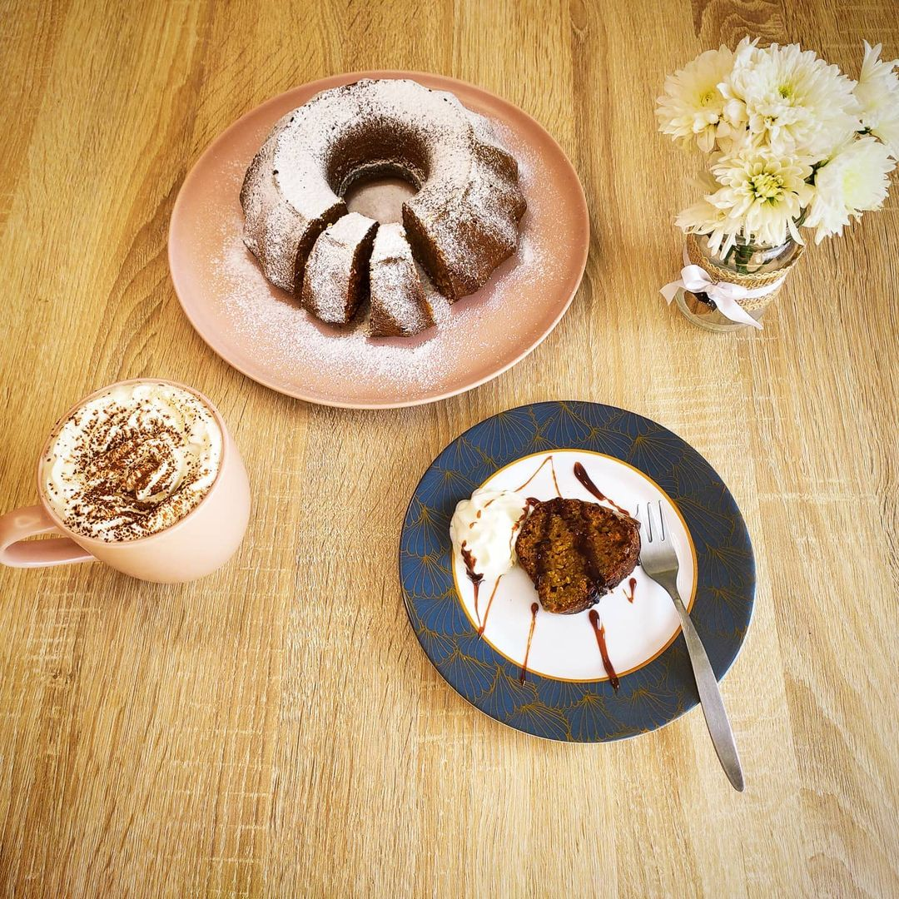

Carrot Bundt Cake 🥕🍌🥚🥧
🥄Mrkvová bábovka 🥕🥧😊😍
Ingrediencie:
60g kryštálového cukru
2 lyžice medu
2 vajíčka
20g bieleho maku
80 g špaldovej hladkej múky
50 g mletých ovsených vločiek
1/2 lyžičky prášku do pečiva @droetker_sk
1/2 lyžičky jedlej sódy
1/2 lyžičky mletej škorice
trošku soli
80 ml kokosového oleja @franzjosefkaiser.cz
30 ml mlieka (bezlaktózove) @rajo_slovensko
1 banán
170 g najemno nastrúhanej mrkvy
1 lžička najemno nastrúhanej citrónovej kôry
Vajíčka si vyšľaháme s cukrom do peny (šľaháme cca 5 minut). V miske si zmiešame preosiatu múku, mleté ovsené vločky, prášok do pečiva, jedlú sódu, mak, škoricu a soľ. Do vyšľahaných vajec postupne pridáme olej. Potom pridáme sypkú zmes, nastrúhanú mrkvu, citrónovú kôru a popučený banán. Pridáme med, mlieko. Všetko dobre premiešame a vylejeme do vymastenej a múkou vysypanej formy. Pečieme 45- 50 minút na 180°C.
Pred podávaním môžeme bábovku posypať práškovým cukrom.
#kolac#babovka#bundtcake#carrotcake#mrkvovykolac#mrkvovababovka#bananovykolac#banana#sweetcake#dezert#dezertkukave#ovsennevlocky#kokosovyolej#med#honey#coconutoil#pecieme#peciemeslaskou#pecenie#bakingwithlove#bakinghome#domacejedlo#domacepecenie#chutnejedlo#chutnykolac#chutnydezert#kava#coffeewithcake#agavesirup#skorica